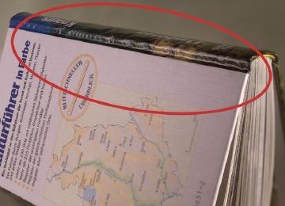
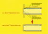
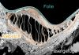
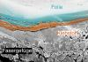

ABLÖSEN DER KASCHIERFOLIE IM FALZBEREICH
|
Fehlerdefinition und Auswirkung:
Durch das Falzeinbrennen bei der Buchherstellung
kann es zu einem Ablösen der Kaschierfolie im
Falzbereich kommen. Das Ablösen der Folie
tritt in der Regel nicht unmittelbar nach dem
Falzeinbrennen auf, sondern ist erst nach einer
gewissen Zeit bzw. einige Wochen zu beobachten. Das
Ablösen der Folie wirkt je nach Grad der
Ausbildung von „verkaufsmindernd“ bis hin
zu „unverkäuflich“ (Abb. 1).
|

|
Abb. 1: Ablösen der Kaschierfolie im
Falzbereich.
|
|
|
|
Mögliche Ursachen:
|
|

|
|
Abb. 2: Schnitt durch einen Deckenband vor und
nach dem Falzeinbrennen.
|
|
|
|
|
|
Abb. 3: Schnitt durch das Deckenbezugsmaterial
im Falzbereich nach Auftreten einer Ablösung
der Kaschierfolie (REM-Aufnahme).
|
|
|
|

|
|
Abb. 4: Schnitt durch das Deckenbezugsmaterial
im Falzbereich nach Auftreten einer Ablösung
der Kaschierfolie (REM-Aufnahme).
|
|
|
|

|
|
Abb. 5: Schnitt durch das Deckenbezugsmaterial
im Falzbereich ohne Ablösung der Kaschierfolie
(REM-Aufnahme).
|
|
|
|

|
|
|
|
|
|

|
|
|
|
|
|

|
|
|
|
|
|

|
|
|
|
|
|
|
Für folienkaschierte Umschlagmaterialien stellt das
Einbrennen des Falzes eine starke Belastung bei der
Buchherstellung dar. Bei diesem Vorgang während der
buchbinderischen Weiterverarbeitung wird zwischen den
Buchdeckeln und dem Rücken der Deckenbände mit
Wärme und Druck auf die Falzeinbrennschienen aus der
Buchdecke in den Falzen ein Gelenk geformt, dass das
Aufklappen der Buchdeckel ermöglicht und einen
formschöneren Buchrücken ergibt (Abb. 2).
Das Falzeinbrennen erfolgt in der Buchfertigungsstraße
als letzter Arbeitsgang. Zum Falzeinbrennen werden von den
Herstellern unterschiedlich geformte Falzeinbrennschienen
angeboten. Diese Schienen werden beheizt und meist bei
Temperaturen zwischen 90 °C und 110 °C mit
Druckbelastung auf den Falzbereich gepresst. Bei der
Deckenfertigung wird das Deckenbezugsmaterial
vollflächig mit Gallert-Klebstoff beschichtet. Auf das
beleimte Deckenbezugsmaterial werden dann die Buchdeckel und
die Rückeneinlage aufgepresst. Die Falzbereiche bleiben
dabei frei, sind aber von dem Gallert-Klebstoff bedeckt. Die
Gallerte wird nun beim Einbrennen des Falzes thermisch
aktiviert und verklebt mit der äußersten Lage des
Buchblocks, nämlich mit dem Hinterklebematerial.
Auf das kaschierte Deckenbezugsmaterial wirkt also einige
Sekunden lang eine hohe Temperaturbelastung und durch das
Aufpressen der Falzeinbrennschiene eine mechanische
Zugbelastung ein. Besonders die Bereiche der Einschläge
an den Rändern der Buchdecken gelten als besonders
gefährdet für Ablösungen der Kaschierfolie,
da dort der Druck höher ist als in den inneren
Bereichen des Falzes.
Erfahrungsgemäß löst sich im Schadensfall
die Kaschierfolie erst in einem gewissen Zeitabstand nach
dem Falzeinbrennvorgang ab. Dies beruht auf der Tatsache,
dass sich die beim Falzeinbrennvorgang gedehnte Folie im
Laufe der Zeit - anders als das Papier - wieder
zusammenzieht und dadurch Rückstellkräfte aus dem
Falz heraus entstehen. Wenn nun die Adhäsion zwischen
der Kaschierfolie und der Klebstoffschicht oder zwischen der
Klebstoffschicht und der Druckoberfläche zu gering ist,
kommt es zur Ablösung der Kaschierfolie.
|
Mögliche Abhilfen:
|
|
Der Buchbinder steht dem Problem der
Kaschierfolienablösung relativ hilflos gegenüber,
da sich zum Zeitpunkt der Produktion in den meisten
Fällen nicht eindeutig ermitteln lässt, ob die
gewählte Materialkombination für das
Falzeinbrennen gut geeignet ist. Lassen sich bereits
während der Produktion Ablösungsprozesse im
Falzbreich feststellen, so kann mitunter durch eine
Temperaturreduzierung in den Einbrennschienen ein
Ablösen vermieden werden.
Um eindeutige Aussagen über eine problemlose
Verarbeitbarkeit der Verarbeitungsmaterialien zu bekommen,
sind gezielte Vorversuche mit anschließenden
Alterungsversuchen die einzig sichere Alternative.
|
Beispiel(e):
|
|
Versuche mit verschiedenen Materialkombinationen:
Für Falzeinbrennversuche wurden aus verschiedenen
Materialkombinationen (Folie/Klebstoff/Druckbogen)
Buchdecken bzw. Bücher gefertigt. An den so gefertigten
Büchern erfolgten anschließend
Falzeinbrennversuche in Buchbindereien und im Labor.
Die verschiedenen Materialkombinationen wurden mit
unterschiedlichen Falzeinbrennschienen bei Temperaturen
zwischen 70 °C und 110 °C verarbeitet. Als
Einbrennzeiten wurden 2 s aber auch
überdurchschnittlich lange Einbrennzeiten von 5 s oder
10 s gewählt. Unmittelbar nach dem Falzeinbrennvorgang
erfolgte eine visuelle Kontrolle der eingebrannten Falze.
Alle getesteten Kombinationen konnten zunächst ohne
Folienablösungen verarbeitet werden. Selbst im Bereich
der Einschläge an den Rändern der Buchdecken
traten bei den getesteten Materialkombinationen keine
Folienablösungen auf. Um mögliche, zeitlich
spätere Ablösungen der Kaschierfolie im Falz der
Bücher zu beschleunigen, wurden die Bücher eine
Woche lang bei 40 °C gelagert und nach
Rekonditionierung auf eine Raumtemperatur von 20 °C im
Falz erneut visuell kontrolliert. Dabei kam es bei
bestimmten Materialkombinationen zu Ablösungen. Bei
anderen Kombinationen traten die Ablösungen jedoch erst
im Zeitraum von bis zu 3 Monaten nach der beschriebenen
Warmlagerung der Bücher auf. Bereiche, in denen solche
Folienablösungen aufgetreten sind, wurden mittels
Rasterelektronenmikroskopie untersucht. Dabei konnte
festgestellt werden, dass der Klebstoff auf der
Druckoberfläche verblieb. Dies muss jedoch nicht immer
so sein. Der Klebstoff verbleibt auf dem Material, zu dem er
eine stärkere Adhäsion aufweist (Abb. 3 und Abb.
4).
Die Versuche zeigten aber auch, dass manche der eingesetzten
Materialkombinationen unempfindlich gegenüber dem
Auftreten von Folienablösungen innerhalb des
Beobachtungszeitraums waren (Abb. 5).
|
Allgemeine Hinweise:
|
|
Für den Reklamationsfall:
Reklamierte Muster sicherstellen.
Ergänzende Literatur:
KUEN, Th.; HUNDSDORFER, O.:
Anforderungen an die Glanzfolienkaschierung für
Umschläge und Buchdecken. Wiesbaden/München:
Bundesverband Druck und Medien e.V. / FOGRA, 1998 (72.002) -
Forschungsbericht
|
|
|
|
|
|
|
Kontakt:
stadler@fogra.org
|
Abl-sta-200111
|